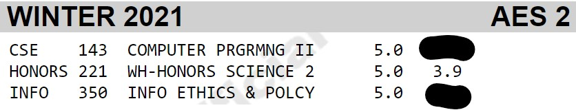

Welcome to my sophomore year
Quarantine made it difficult to maintain my social life. As a result, my sophomore year was full of professional development. I accomplished a lot this year, and got to celebrate toward the end of Spring Quarter by traveling to multiple states (once I got my COVID-19 vaccination) and finally reconnecting with my friends and family in person after being seperated for so long (due to the pandemic).
Additionally, the COVID-19 vaccine got released this year, and hope was starting to spread that life would start returning back to normal.
Personal life
Once I got my COVID-19 vaccine, things were starting to look up for the world, and I began travelling. In May 2021, I took a trip to Denver, CO with my dad for my cousin's high school graduation. It was a great escape from Seattle, and helped me reconnect with my family in Colorado.
When school ended, I took a trip to Los Angeles, CA with a few friends in June 2021. This was the most fun I had in such a long time. It felt like my first taste of freedom since the pandemic began. I got to reconnect with friends I hadn't seen in months, and got to finally see friends in person that I had only seen virtually for the last year and a half. My friends and I experienced a positive culture shock with the sunny weather and friendly people in California, and came back to Seattle refreshed and ready to keep travelling.


Academic life
Calderwood Seminar for Public Writing: Math That Lies: Communicating Why Some Quantitative Arguments are Misleading or Bogus (Honors 221)
This was my first writing class at UW and it was incredible! I love writing, and usually coast through writing courses with minimal effort and stellar grades, but this class was super challenging. It intimidated me at first because each week we have to do extensive reading and writing, and alternate between being the writer and editor. I was also scared because each week we have an in-depth critique of everyone's writing in front of the entire class. I was worried my writing wouldn't be good enough, but through the extensive critiques I was able to sharpen my writing to be the best it had ever been in my life, and all in just 10 weeks! In a single quarter, I learned the importance of and the skills to simplify complicated quantitative topics to be easily understood through writing. This was definitely one of my favorite classes I've ever taken! I also ended with a pretty good grade ;)

Professional life
Changemakers in Computing Mentor
During Winter Break 2020, I got hired as a mentor for the UW Allen School of Computer Science's Changemakers in Computing program. As a mentor, I created an outreach strategy calender to reach 9 youth development programs and recruit 25 mentees for our pilot year. Once the program began, I helped historically marginalized students code for social good during the 4-week summer program. I helped students debug their code during office hours and created virtual presentations and lesson plans to direct them in a week-long hackathon where they combined their technical skills with justice frameworks to use technology to positively impact an existing social issue.
CodePath.org Mobile Development Student
During Winter 2021, I enrolled in this 8-week course and learned how to code for iOS. I met for a couple hours each Saturday for coding lessons and Q&A sessions with industry leaders like Pinterest and SpaceX. Throughout the week I worked on my own time to complete each deliverable. By the end of the program, I had created an iOS app where users could upload and save flashcards to their device. With a simple tap, users can alternate between their inputted questions and answers.